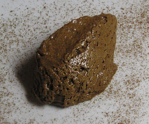

Mousse au Chocolat
5 von 6Ca 2 Tafeln Chokolade zerkleinern und im Wasserbad unter Ruehren schmelzen, bis ein geschmeidiger Brei entstanden ist. Vom Herd nehmen.
2 Eigelb mit Zucker und Schlagrahm verruehren, unter die Masse heben. Die 2 Eiweiss sehr steif schlagen und unterziehen.
Vor dem Servieren kaltstellen.
